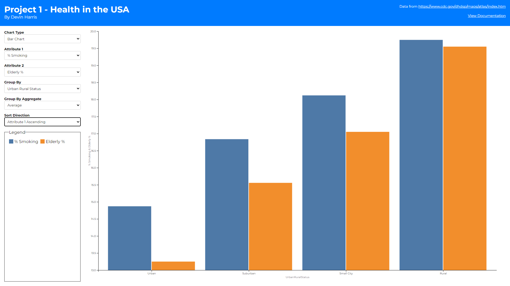
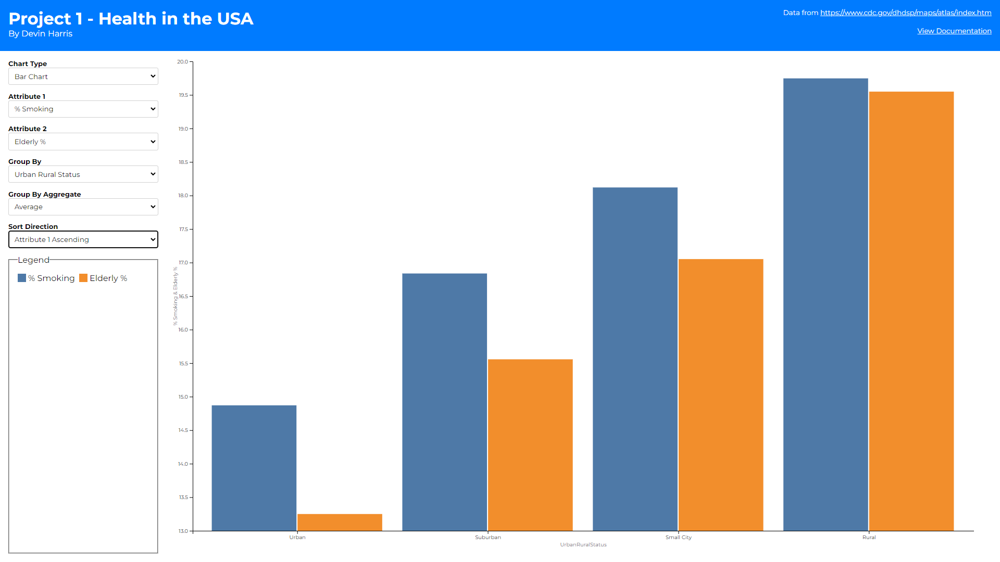

The above sketches then translated to the actual visualization of
these components in my app gui.
As you can see there are 3 different views (1 for each chart type).
I then have a global form on the left-hand side that provides
attribute changing, grouping/aggregating, and in some cases sorting
functionality. I wanted to make these controls shared between the
different chart types as much as possible to make switching between
them feel more fluid and keeping the same selections between charts.
The most interesting thing about this form section to me is the
grouping functionality. Upon looking at the data I found that
showcasing datapoints for all 3000+ counties would be difficult in
some cases. Thus, I wanted a way to limit the number of datapoints
for these instances. By grouping all the counties into their
respective state, or urban rural status I can reduce the number of
datapoints to render dramatically. This led to the question of how
should I group them? Should I average all the datapoints together?
Take the maximum value? This is where the group by aggregate
selection came in. This allows users to not only group datapoints
together but decide how to aggregate the values of that group as
well.
You may also notice there are some additional controls when the bar
and choropleth maps are selected. At first, I wanted to display two
maps side by side (1 for each attribute) but quickly realized that
horizontal scroll would be needed to do this and comparing over
scroll felt incorrect. Thus, I opted to add more controls on the
right-hand side to allow the user to toggle how the coloring is
applied to a single map (based on the first or second attribute
depending on how many times the toggle button is clicked). This
prevents the user from having to sift their eyes across two
different maps when they want to compare those hot/low spots I
mentioned above, while also giving more screen real estate to the
map.
-
The first is a sorting selector on the bar chart. This was created
to help assess the overall trend of the data. Assessing which
county/state has the highest/lowest value in the bar chart was
difficult before this selector. With it, sorting allows you to
pull the highest or lowest values to the left most points on the
graph which also help show the general slopes of whichever
attribute you are sorting over. Alphabetical sorting also helps
users find a specific county/state/urban rural status they are
looking for without having to scroll blindly. It also allows for
comparing the growth/decay over two attributes to help identify if
there is some correaltion between them.
- The second is a toggle button on the chorpleth map.
There is also a legend section to help illustrate what colors line
up to what groups or values, again depending on chart type. The
legend can also help with filtering down the dataset as well.
Clicking a color swatch with show/hide that group from the chart
making it easier to hide outliers. The following rules were followed
for this legend and color scheme building within the charts:
-
Scatter plots color their dots based on the state if the group by
is county or state. This is because a legend with a color for
every county was hard to sift through and did not seem to help the
visualization. If group by is urban-rural-status the 4 statuses
are used as the legend domain.
-
Bar charts color their bars based on attribute. I decided to show
bar charts as two bars per x axis tick because it helped to
compare the two attributes per county/state/urban-rural-status
easier. This of course led me towards keeping the colors
consistent between attributes to better showcase how they compare
across different points on the x-axis.
-
Choropleth maps used a green and blue sequential scale for the 1st
and 2nd attribute selected respectively. This helps differentiate
the two maps without having to label which map is showing which
attribute while also showing the geographical hotspots/lowspots
for each attribute across the United States.
Finally, there are some interesting interactions that can be made
within these charts. Brushing to select certain datapoints is
possible on the scatter plot chart. These selections are highlighted
across the other chart types as well. Brushing was difficult to
implement in the bar chart because zooming and panning was
incorporated there. This was partly because when grouping by
counties, in most cases there is not enough space to assign at least
1 pixel to every bar chart, so allowing the user to zoom in was
necessary to get any use out of the bar chart on that group by. This
zooming conflicted with the brushing implementation so the bar just
shows selections made from other graphs instead. The choropleth map
also had a brushing problem, but selecting can still be done from
this chart. Simply clicking on a county will toggle its selected
state and that will propogate across the other charts as well.
 * Sketch 2 *
* Sketch 2 *


 
